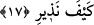

için açılmış, bir kısmı da dibe batanları azâba uğratmak üzere kapanıp kaynaşmıştır.”
17. Yahut gökte olanın üzerinize taş yağdıran (bir fırtına) göndermeyeceğinden
emin misiniz? İşte (bu) tehdidimin ne demek olduğunu yakında bileceksiniz!
“Yahut gökte olanın üzerinize taş yağdıran (bir fırtına) göndermeyeceğinden emin
misiniz?” Bu, bir başka yönden bir diğer tehdide geçiş ifâdesidir. Âyette yer alan
“hâsıben” kelimesi, “gökten yağan taş” anlamınadır. Nitekim Allah Lût kavmine ve fil
ashabına bu şekilde taş yağdırmiştı: Buna göre âyet-i kerîmenin mânâsı; “gökte olanın
üzerinize taş göndermeyeceğinden emin misiniz?” demek olur. Buna göre burada şu
ifâde edilmek istenmiştir: Bu iki tehlikeden kurtulmak için size herhangi bir
eman/güvence verildi mi? Mâdem ki size herhangi bir güvence verilmemiştir o hâlde
şirkinizde devam etmenizin anlamı nedir?
“İşte” kesin olarak “(bu) tehdidimin ne demek olduğunu yakında bileceksiniz!”
Yâni tehdid edilip uyarıldığınız şeyi açıkça gördüğünüzde bu gerçek miymiş yoksa değil
miymiş, şiddetli miymiş yoksa zayıf mıymış bileceksiniz. Uyarıldığınız tehdidi
gördüğünüz zaman benim vermiş olduğum haberim de herhangi bir eksiklik ve aksaklık
olmadığını, azâbımın şiddetli olduğunu ve onu savuşturacak herhangi bir engelin
bulunmadığını bileceksiniz. Fakat o zaman bu bilgi size fayda vermeyecek.
Burhânu’l-Kur’an’da ifâde olunduğuna göre Allah, onları ilkin yere batırıvermekle
tehdid etmiştir. Çünkü onlar yeryüzündedirler ve yeryüzü kendilerine gökten daha
yakındır. Sonra gökten başlarına taş yağdırılmakla tehdid olunmuşlardır. Taş yağdırılma
tehdîdinin daha sonra gelmesinin sebebi işte budur.
Fakir (Bursevî)’nin kanaâtine göre, gecenin ortasında bana verilen ilham ışığı altında
diyebilirim ki, birinci âyet-i kerîme yorganın altında yatmak, seher vakti namaza
kalkmamak ve Allah ile münâcata başlamamak Allah’tan gaflet ehline yere batırılmış
olmak gibi bir cezâdır. Anlatılır ki âriflerden birisi teheccüd namazı kılmak üzere
kalkar. Ancak üşüme hisseder ve çıplak olduğu için ağlamaya başlar. Allah Teâlâ
tarafından kendisine şöyle nidâ olunur: “Biz seni uykudan uyandırdık ve kaldırdık,
başkalarını ise uyuttuk. Sen şimdi bizim sana olan bu lütfumuzdan dolayı ağlıyorsun,
öyle mi?” Bu cümle ile ona şöyle denmiş oluyordu: “Senin uykudan uyandırılman senin
için bir nimet, gâfillerin uyutulmaları ise onlar için bir azaptır. Şu hâlde sen eriştiğin bu
nimete şükret; çıplak kaldığın için sabırsızlık gösterip de şikâyette bulunma. Çünkü
çıplaklık belâsı gaflet belâsından daha hafiftir.”
İkinci âyet-i kerîme ise gökten şiddetli bir yağmurun indiğine işâret etmektedir. Çünkü
şiddetli yağmur teheccüd namazına kalkan kimsenin namaza durmasına, abdest alma ve